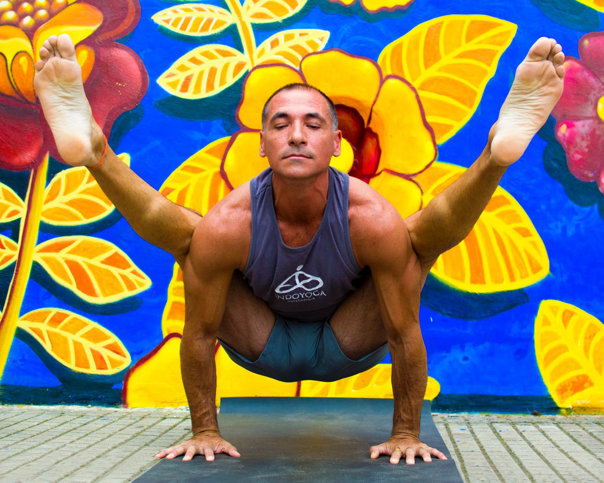

IndoYoga
Ashtanga · Vinyasa · Mysore
Escuela de Ashtanga Yoga fundada por Kike Fay. Clases grupales, práctica Mysore y formación de instructores con certificación internacional.
Belgrano 161 · Gualeguaychú · Entre Ríos
Práctica semanal
Sesiones de 1 hora 15 minutos. Guiada/Flow, Ashtanga/Flow y Ashtanga Mysore con dos instructores, cuatro días a la semana.
Horarios — Febrero 2026
| Hora | Lun | Mar | Mié | Jue |
|---|---|---|---|---|
| 17:30 | Guiada / FlowKike | — | Guiada / FlowKike | — |
| 19:00 | — | Ashtanga / FlowKike | — | Ashtanga / FlowKike |
| 20:30 | Ashtanga / FlowGerva | Ashtanga MysoreKike | Ashtanga / FlowGerva | Ashtanga MysoreKike |
Valores mensuales
La clase de prueba se descuenta del pago del mes. Se abona mes completo hasta el día 10. Las clases se recuperan dentro del mes con el mismo profesor.
"
La verdadera sabiduría se adquiere con la fuerza personal de activar la firmeza y flexibilidad en cada objetivo de la vida.
Teacher Training
Dos programas con certificación internacional. Presencial en Gualeguaychú y online vía Zoom.
TTC Ashtanga Yoga
Horas de formación
Programa completo en la tradición del Ashtanga Yoga. 1ra Serie (Yoga Chikitsa), 2da Serie (Nadi Sodhana), práctica Mysore, ajustes, biomecánica, filosofía y meditación.
U$S 100 / mes · 10 cuotas
Matrícula: U$S 50. Incluye material, manual y 2 clases semanales. Req: 2 meses de práctica.
Solicitar entrevistaTTC Yoga Dinámico
Horas de formación
Vinyasa Flow para todo tipo de personas. Series de posturas adaptadas y creativas. No requiere experiencia previa.
U$S 80 / mes · 10 cuotas
Matrícula: U$S 50. Incluye material y manual. Sin experiencia previa. Clases en Shala aparte.
Solicitar entrevista
Founder & Director
Fundador de IndoYoga, escuela de prácticas y formación en Ashtanga Yoga en Argentina. Más de una década dedicado a la enseñanza y transmisión de la tradición del Ashtanga Yoga.
En 2017 viajó a Mysore, India, donde practicó bajo la guía de Sharaswatih, hija de Sri K. Pattabhi Jois, en el Instituto KPJYI. Desde 2018 dirige formaciones de Instructorados TTC 300hs y Profesorados TTC 500hs.
Autor de "Ashtanga Yoga Para Sí Mismo" — Ed. Autores de Argentina, 2015
Conectar
Escribinos para reservar tu clase de prueba, solicitar entrevista para formación, o conocer más.
WhatsApp — Kike
+54 344 654 6367WhatsApp — Gerva
+54 344 665 9406Belgrano 161
Gualeguaychú, Entre Ríos
Argentina